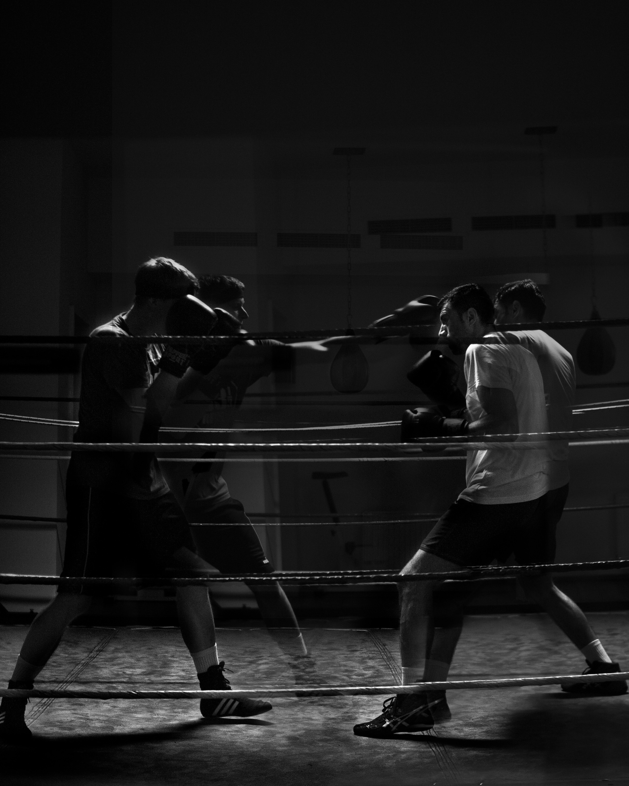

Mööp-mööp-mööp, die Zeit läuft. Drei Minuten Seilhüpfen. So lange dauert eine Runde beim Boxen. Die Schnüre schneiden durch die Luft, die Füsse werden zu Springfedern. Wer den ersten Durchgang übersteht, darf sich auf vier weitere freuen. Dann erst werden die Boxhandschuhe angezogen, werden Schlagtechnik und Beinarbeit geübt. Es ist Freitagabend. Das kleine Boxstudio im hippen Berlin-Friedrichshain ist voll, die Luft dick, die Spiegelwand beschlagen.
Ein Dutzend Männer und Frauen mittleren Alters schwitzen und schnaufen sich nach der Arbeit ins Wochenende. Fitness statt Feierabendbier. «Boxen bietet ein vielseitiges Workout», sagt Trainer Marc. Es fördere Ausdauer, Schnelligkeit, Kraft und Koordination, Reflexe und Beweglichkeit. «Und macht tierisch Spass», fügt Kirstin an, verschwitzt und gutgelaunt, wie alle ihre Mitstreiter. Freizeitboxen und Artverwandtes wie Box-Aerobic oder Body Combat stehen bei den fitnessbewussten Grossstädtern – und insbesondere den Grossstädterinnen – hoch im Kurs. Rund 70 Freizeitsportler besuchen regelmässig die Trainings im Boxstudio Friedrichshain, ein Drittel davon sind Frauen.
«Das hier ist anders. Kein Milieu, keine Proleten und Prügelknaben.»
Wer hier trainiert, will sich nicht schlagen. Anders als beim Amateur- und Profiboxen geht es in fitnessorientierten Boxclubs nicht um Punkte im Ring, um Siege über Gegner. Gekämpft wird höchstens gegen den inneren Schweinehund. Die Haken und Geraden sind für die Luft bestimmt oder den Sandsack. Und wenn bei der Partnerübung tatsächlich einmal etwas ins Auge geht, entschuldigt man sich eher, statt nochmals draufzuhalten. Boxen light, Boxen für Zivilisierte. «Ich wäre nie einem Boxverein beigetreten – wegen des schlechten Rufs», sagt Holger, noch etwas ausser Atem von der letzten Schattenboxrunde. «Das hier ist anders. Kein Milieu, keine Proleten und Prügelknaben.»
Würstchen und Kuchen statt Schweiss und Blut
Ostwärts, nach Berlin-Marzahn. Auf der Suche nach dem Milieu, den Proleten und Prügelknaben. Früher war hier DDR, Heimat von Henry Maske und Axel Schulz, den Boxhelden des wiedervereinten Deutschlands, die mit ihren Kämpfen in den 90er Jahren ein Millionenpublikum vor die Fernsehbildschirme lockten. Zwischen Plattenbauten und Industrie eine alte Sporthalle. Die Aussenmauer graffitibunt, zwei grimmige Muskelmänner lassen die Fäuste fliegen, darüber steht in grossen schwarzen Lettern «BOXEN». Ein Anflug von Untergrund, der sich beim Betreten der Halle im fröhlichen Gewusel eines Familiensamstagnachmittags verflüchtigt. Es gibt Würstchen und Kuchen und Getränke. Eine Sportveranstaltung wie jede andere. Einzig der aufgebaute Boxring verrät, dass beim 7. Pokalturnier des SV Lichtenbergs keine Tore geschossen, sondern Schläge ausgeteilt werden. So harmlos stellt man sich das verrufene Box-Milieu nicht vor. Ein wenig befremdend wirkt einzig der Anblick zweier zehnjähriger Knirpse, die einander unter den Anfeuerungsrufen ihrer Eltern auf die Rübe kloppen.
«So alt war auch ich bei meinem ersten Kampf», erzählt Stefan Härtel. Der Blondschopf mit dem spitzbübischen Grinsen – er erinnert eher an Lukas Podolski als an Vitali Klitschko – zählt zurzeit zu den besten Amateurboxern im Mittelgewicht. Sein fünfter Platz bei den Olympischen Spielen in London brachte dem 25-Jährigen den Titel «Boxer des Jahres 2012» ein. Nach dem Besuch bei den Feierabend-Sandsackakrobaten drängt sich die Frage auf: Wie tickt ein «richtiger» Boxer?
Mit Cleverness punkten
«Ich war ein fauler Sack», meint Stefan Härtel amüsiert. Wenn er lacht, herzlich und auch ein wenig schelmisch, blitzt der kleine Junge durch, der den Turnbeutel im Zimmer versteckte und seinem Vater sagte, er hätte ihn in der Schule vergessen, weil er keine Lust hatte, ins Boxtraining zu gehen. Fast wäre er von der Sportschule geflogen, hätte er nicht eine demütigende Niederlage gegen eine «Pfeife» einstecken müssen, die seinen Ehrgeiz und seine Disziplin anstachelte. Seither ist Härtel ein ambitionierter Athlet. Wenn er nicht trainiert, studiert er Sport und Geschichte auf Lehramt. «Ich bin kein Übertalent, war ich nie. Ich bin nicht so beweglich, nicht so intuitiv wie andere», sagt er. «Aber ich habe eine gute Technik und starke Nerven. Ich punkte mit Cleverness.»
«In keinem meiner 174 Kämpfe habe ich je jemanden K.O. geschlagen. Ich geile mich nicht daran auf, dem anderen weh zu tun. Mir geht es darum, den Gegner zu kontrollieren.»
Das hört sich eher nach Schach an als nach brutalem Faustkampf. «An sich ist Boxen ein Sport, der die Persönlichkeit bildet und nichts mit Gewalt zu tun hat», betont der Olympia-Fünfte. Nicht umsonst werde es als «Fechten mit den Fäusten» bezeichnet. «In keinem meiner 174 Kämpfe habe ich je jemanden K.O. geschlagen. Ich geile mich nicht daran auf, dem anderen weh zu tun. Mir geht es darum, den Gegner zu kontrollieren.» Ist das Bild des bösen Boxers also nur ein Klischee? Jein. Natürlich gäbe es da auch die anderen, räumt Härtel ein. Die schwarzen Schafe, die krumme Dinger drehen und für Negativschlagzeilen sorgen. «Ob diese Leute im Boxverein sind oder nicht, spielt dabei keine Rolle. Entscheidend ist der familiäre Hintergrund, das soziale Umfeld.»
Da liegt der Hund begraben. Boxen zieht die Underdogs an, die sozial Schwachen, weil es ein billiger Sport ist. Sieben Euro kostet der Monatsbeitrag im Verein, dafür gibt’s zwei Trainings die Woche und sämtliche Ausrüstung wird zur Verfügung gestellt.
Die Benachteiligten fanden zwischen den Seilen immer schon, was ihnen sonst verwehrt blieb: Die Chance, sich zu behaupten. Das Ringen im Ring wurde nicht selten zum Kampf um Anerkennung, der Kinnhaken zum Befreiungsschlag gegen Unterdrückung. Die Rassendiskriminierung in den USA machte Boxen zum Symbolsport der Schwarzen, Jack Johnson, Joe Louis und Muhammad Ali zu Idolen der Bürgerrechtsbewegung.
Die bulligen Heroen sind verstummt
Jene Tage, als Boxen die Personifizierung des sozialen Widerstands war und die bulligen Heroen mit markigen Sprüchen die Weltöffentlichkeit bewegten, sind längst vorbei. Verflogen auch die deutsche Boxeuphorie der 90er. Ist der Boxsport in der Krise? «Boxen war schon populärer als heute», drückt es Stefan Härtel diplomatisch aus.
Der Amateursport, der ohnehin immer im Schatten des medial lautstark inszenierten Profiboxens stand, fristet ein Nischendasein. Seit ein paar Jahren zeichnet sich jedoch ein Wandel ab – der Emanzipation sei Dank. Frauenboxen erfreut sich wachsender Beliebtheit, 2012 durften die Damen erstmals bei Olympischen Spielen in den Ring steigen. «Warum nicht?», findet Härtel. Er habe grossen Respekt vor den sportlichen Leistungen der Boxerinnen, auch wenn ihre Kämpfe den Zuschauern lange nicht so viel böten wie jene der Männer.
Dafür scheinen die Damen das angeschlagene Image des Boxsports aufzubessern und sind damit wohl massgeblich für den Fitnessboxboom verantwortlich. Was hält ein «richtiger» Boxer davon, dass sein Sport im Stresszeitalter als Dampfablassen für Krawattenträger und Karrierefrauen herhalten muss? Härtel zuckt gleichgültig mit den Schultern und meint nüchtern: «Dann sehn’ die Leute wenigstens mal, wie anstrengend das ist.»
Das schreit nach einem Selbstversuch.
Auf in den Krampf!
Der Kopf ist hochrot, der Puls am Limit, der Körper schweissgebadet. Freitagabend, eine Woche später, zurück im Boxstudio Friedrichshain. Mir wird nach wenigen Minuten klar, was Stefan Härtel mit anstrengend meinte. «Kannst ruhig richtig zuschlagen, das tut dem Sandsack nicht weh», witzelt Marc. Dem nicht, aber was ist mit meiner Hand? Immer langsamer prallen meine Fäuste links, links, rechts auf den trägen Sandsack. Ein fragender Blick zum Trainer. Mach ich mich gut? «So sieht das am Anfang bei allen aus.» Also nicht. «Gib dir noch drei Monate», fügt er an, «so lange dauert es, bis die Bewegungsabläufe sitzen und die Haltung lockerer wird.» Sich durchboxen erhält damit eine ganz neue Bedeutung. Wenigstens ist die Zeittafel gnädig. In einigen Sekunden ist der Krampf vorbei. Drei, zwei, eins – mööööp.